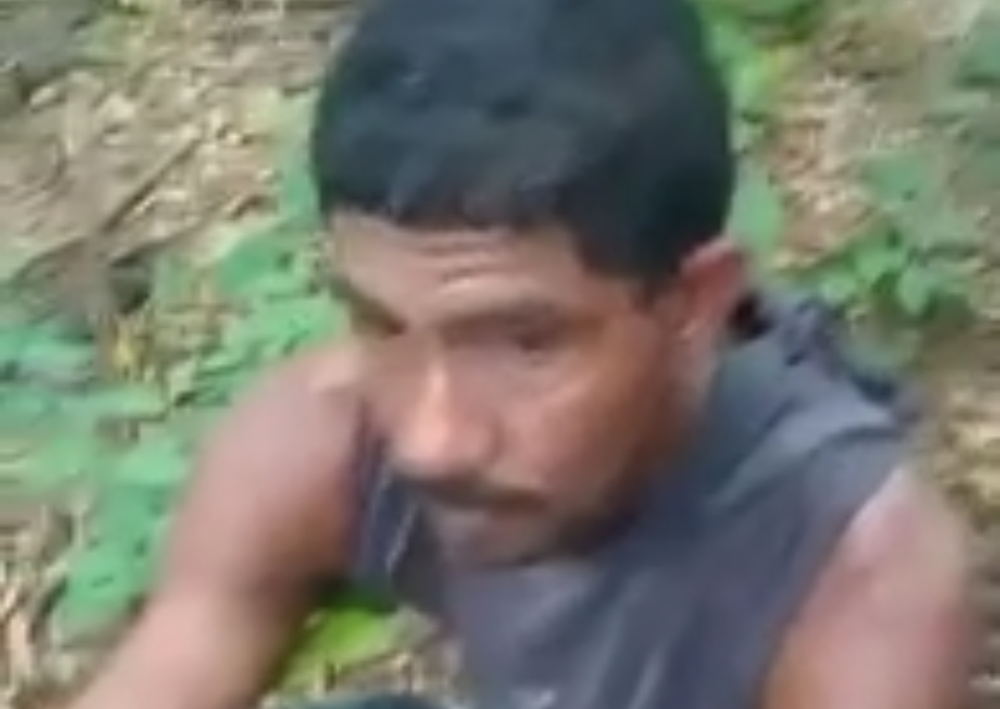
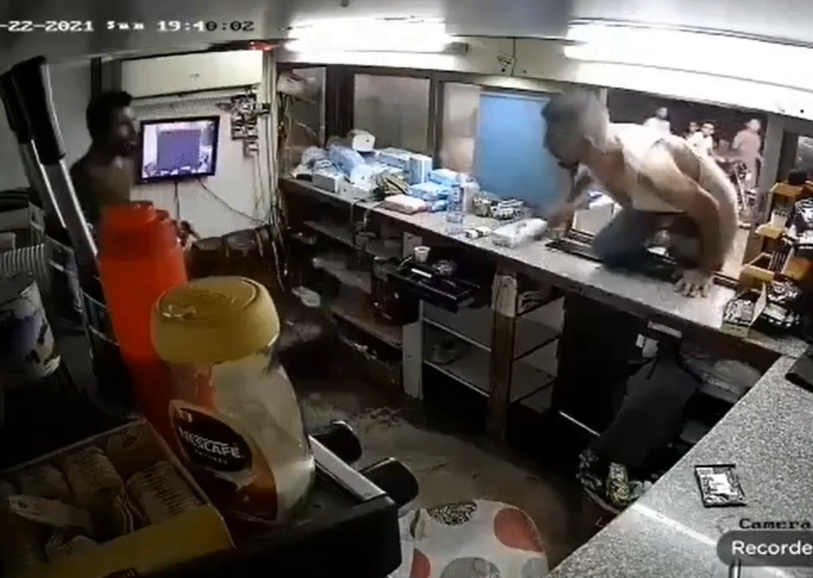
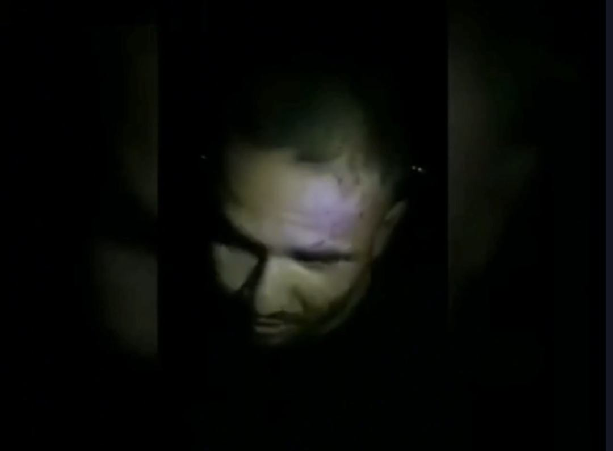
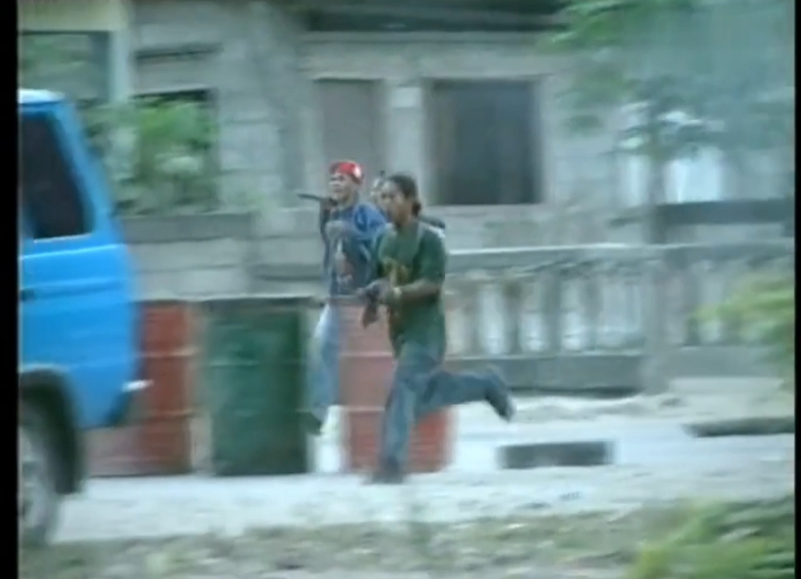
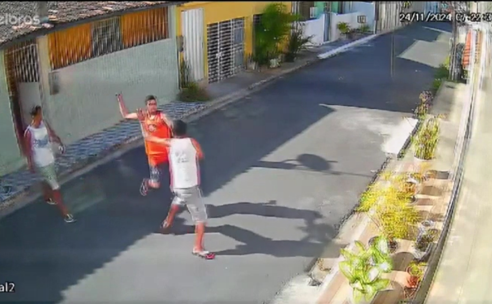
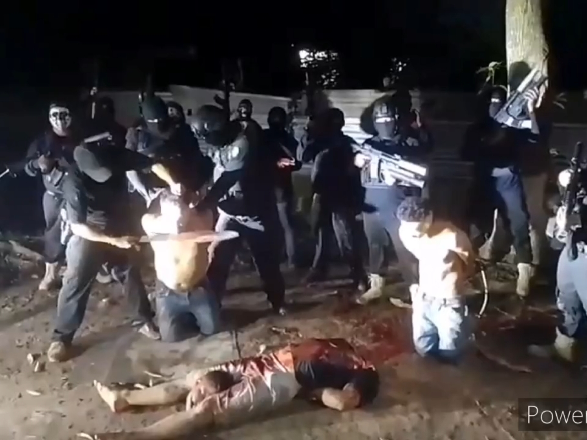
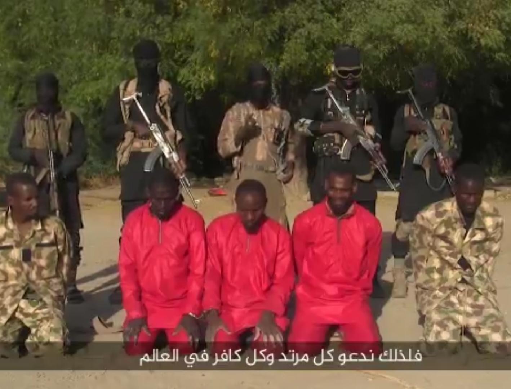
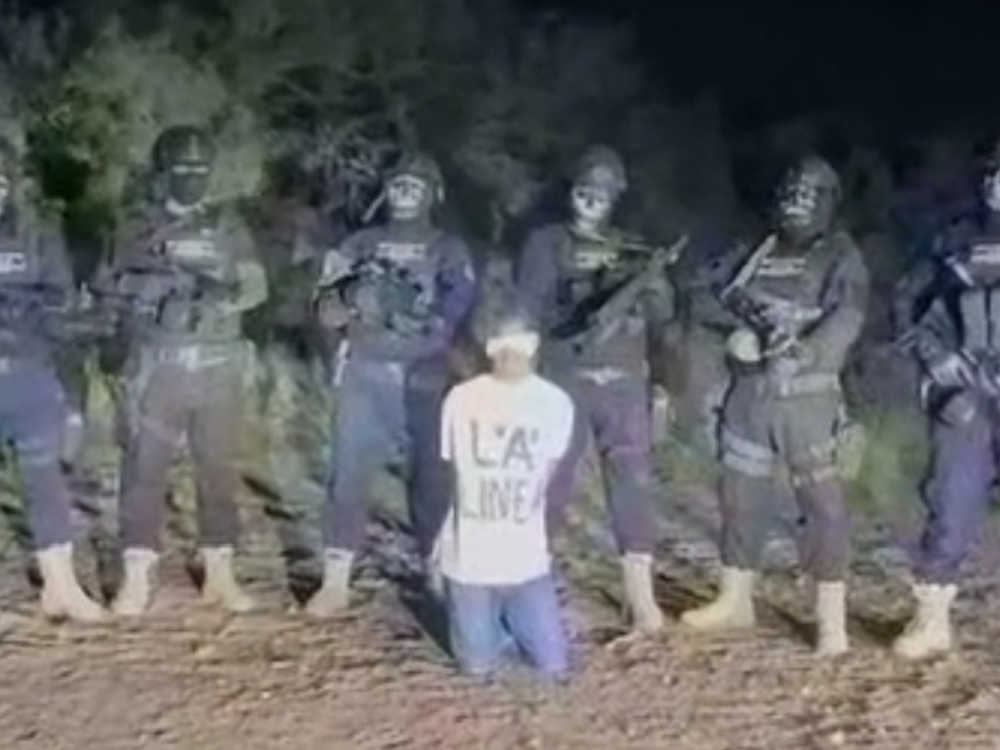
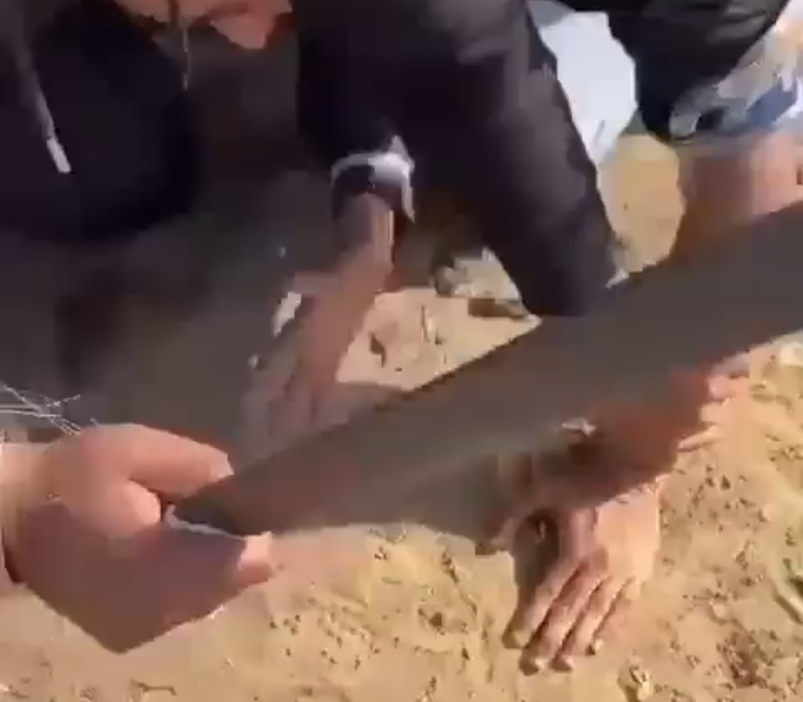

Darkness
Lihat juga: video terbaru
Rekaman Seorang Pria India Yang Aktif Membakar sementara Belasan Orang Mencoba Memadamkannya
Pria Haiti Dieksekusi Oleh Anggota Geng Lawan
Penikaman Kamila Pacassi Zanga (15 Oktober 2024 | Caranavi, Bolivia)
Pembunuh Bayaran Dari La Chapiza Mengeksekusi 6 Orang
Warga Brazil dari Komunitas FNF MMLL Bunuh Diri Dalam Siaran Langsung Dengan Senapan
Air Mancur Darah
Pria Bertopeng Menembak Kepala Seseroang Di Depan Pusat Perbelanjaan
Wanita Ditikam Dengan Pisau Sebanyak 150 Kali Karena Kencan Tinder
Eksekusi 2 Orang Dengan Hujan Peluru Yang Berlebihan
Pria Dibunuh Dengan Batu
Pria India Siaran Langsung Saat Gantung Diri
Istri Gembong Narkoba Yang Ditembak
Kartel Mengeksekusi Orang
Gadis 'Rose Pants' dipotong-potong hidup-hidup oleh kartel. (subtitel bahasa Inggris dan kualitas lebih baik)
Seorang pria ditembak dan terbunuh saat berada di toko sepatu di depan seorang anak. Ekuador, 19 Mei 2025
Bos CJNG Plaza Dieksekusi oleh Anggota Operativo Barredora
Valeria Marquez, Seleb Tiktok asal Meksiko Tewas Ditembak saat Siaran Langsung
Anggota Milisi RSF Sudan Terkena Tembakan Langsung
Akhir Yang Buruk Bagi Rival
Eksekusi mantan kepala polisi Afghanistan Haji Mullah Achakzai oleh pasukan Taliban
Seorang Pria Memukuli Pencuri Hingga Tewas
Anggota Kartel Menggorok Leher Seorang Pria
Kartel Mengeksekusi Dengan Kapak
Ayah Bunuh Anak Perempuannya Saat Bertengkar Hebat
Pria Menembak Diri Sendiri Di Teras
Pria 60 Tahun Tertabrak Kereta Api yang Sedang Berjalan

Perampok Tertembak Oleh Petugas Keamanan dan Berdarah
Militan ISIS Mengeksekusi Satu Per Satu
Seorang Pria Ditanduk Sapi Hingga Tewas oleh Sapi
Seorang Pembunuh Bayaran Berlari ke Belakang Tentara Pensiunan dan Mengeksekusinya Dengan Beberapa Tembakan.

Seorang Gadis Menyiarkan Langsung Aksi Bunuh Dirinya di X
3 Guy 1 Hammer
ISIS Mengeksekusi Seorang Pria Dengan Batu
Kartel Menyiksa Migran Honduras
Seorang Wanita di Eksekusi Oleh Sebuah Geng

ISIS Melindas Tentara Suriah Dengan Tank
Anjing Memakan Penis Manusia (tanpa suara)

Seorang Pria Dipenggal dan Organ Dicabut
Snitch Tertembak Oleh Kartel
Seorang Pemerkosa Dihancurkan Kepalanya Menggunakan Palu
Pria Ditikam di Jalanan Sampai Mati
Tiga Orang Pria Ditembak Mati Oleh Pembunuh Bayaran. Puerto Riko, 16 Maret 2025
Seorang Pria Muslim yang Sedang Menunggu Waktu Sahur Ditembak Mati oleh Empat Pria di Luar Rumahnya - Aligarh, India - 14 Maret 2025
Dua Orang Pria Bertengkar dan Berakhir Dengan Pembunuhan
Pembunuh Bayaran Magang Melakukan Aksinya
Penembakan Yang Melibatkan Polisi Militer Tewaskan Satu Orang
Orang-orang Bersenjata Menembak Dikepala Hingga Tewas
Eksekusi Terhadap Seorang Alawi
Seorang Pria Mengejar dan Menikam Saudaranya Hingga tewas Karena Sengketa Tanah. Vietnam
Pria Berbicara Dengan Seorang Gadis dan Pacar Gadis Itu Cemburu Menembaknya Hingga Mati
Video Eksekusi Hutan
Menjadi Sasaran Rudal, Idlib Selatan - Suriah
Tiga Orang Dieksekusi Dengan Sepotong Kayu
Pria Terbunuh Dengan 32 Tembakan
Pria Menusuk Pacar dan Dirinya Agar Bisa Mati Bersama
Pria yang Ingin Bunuh Diri Berjinjit di Depan Kereta Api
Pemunuhan Seorang Pengemudi Taksi Dengan Menembaknya di Tenggorokan

Seorang Pria Ditembak Mati Saat Sedang Bersama Pacar dan Anak kecil
Penggal Kepala Yang Gila-Gilaan oleh Kartel
Eksekusi Geng Haiti
Tawanan Dieksekusi Dengan Tembakan
Wanita Menusuk Pemerkosa Hingga Mati
Anggota HTS Membunuh Yang Datang Untuk Menyerah
Dua Orang Ditembak Oleh Pembunuh Bayaran di Bus Philipina
Eksekusi Publik Terhadap Seorang Pedofil di Iran
Pria Melompat ke Rel Kereta
Penembakan Massal di Ekuador
Pria Membawa Wanita Mati Bersama di Rel Kereta
Pengusaha Ditembak Didepan Anak dan Istri
Polisi Militer Ditembak Mati
Seorang Pria Membakar Dirinya Sendiri
Pria Tionghoa Gila Menusuk Wanita Hingga Meninggal
Pria Dibacok 21 kali Dengan Parang
Pria Dipukuli Sampai Mati Dengan Palu
Seorang Pria Dibunuh Secara Brutal Menggunakan Parang
Suami Menusuk Istrinya Hingga Meninggal
Pria di Kursi Roda Ditembak Pembunuh Bayaran di Rumah Sakit
Pencuri Ditembak di Tangan dan Kaki
Seorang Pria Menusuk Istrinya Hingga Meninggal
Kartel Narkoba Meksiko Menembaki Seorang Pria

Eksekusi 2 Pria Oleh Tentara
Ibu Dibunuh di Dekat Anaknya

Seorang Wanita Menusuk Pria di Siang Hari.

Kongo Eksekusi Lebih Dari 170 Narapidana

Sergey Kirilov Gantung Diri Saat Panggilan Skype

Pria Pengangguran Bunuh Diri Dalam Siaran Langsung TV
Pria dibunuh oleh mantan istrinya setelah berdiskusi di dalam rumah dan penisnya dipotong.
Anggota Geng MF Dipenggal di Los Chapos
Pria Mengalami Kerusakan Otak Akibat Serangan Palu

Pemuda Dibunuh Karena Menggunakan Istilah yang Merujuk pada Fraksi Lawan di Pesta
Pria Secara Brutal Membunuh Terduga Pencuri Ayam Menggunakan Panga di Kenya
ISIS Mengeksekusi Warga Suku Yang Mengingkari Janjinya
Guru Perempuan Muda Ditusuk Secara Brutal Oleh Pemberontak Myanmar
Dibalik Layar Video Eksekusi Tahanan
Familia Michoacana Eksekusi Anggota CJNG
Pembunuhan Politisi dari Ceará Brazil

Penusukan Brutal
Pencuri Membunuh Supir Taksi
Eksekusi Tenggorokan Brutal

Eksekusi Baru ISIS Termasuk Tentara Anak yang Mengeksekusi Tahanan

Kompilasi Pertarungan Go-Pro Dari Seluruh Dunia

Kartel Narkoba Meksiko Memenggal Dua Tahanan dengan Gergaji Mesin

Gadis Ditikam Sampai Mati Oleh Mantan Kekasihnya

Eksekusi Penggal Kepala (ISIS)
Massa Siksa Pria yang Diduga Pemicu Kebakaran Hutan

Eksekusi Tahanan Oleh Isis

Pembacokan Seorang Pria

Petugas Keamanan Ditembak Mati

El Siri

Pria Muda Ditikam Hingga Tewas

Sniper Pakistan.

FUNKY TOWN V.1

Milisi Pro Indonesia vs Milisi Pro Timor Timur

Los Zetas Mengeksekusi Seorang Wanita

Penusukan di Brazil

Pembacokan Orang Madura Tahun 2000
Seorang pria disiram air keras dan dibacok.

Peringatan Brutal! Kartel Menghabisi Saingannya
Seorang pria disiksa hidup-hidup oleh geng kartel

Teroris Nigeria

Kartel Klasik

Hukuman Potong Tangan dengan Parang

Pria Tunawisma Dipukul & Ditusuk

Tim Forensik Mencabut Kapak dari Kepala